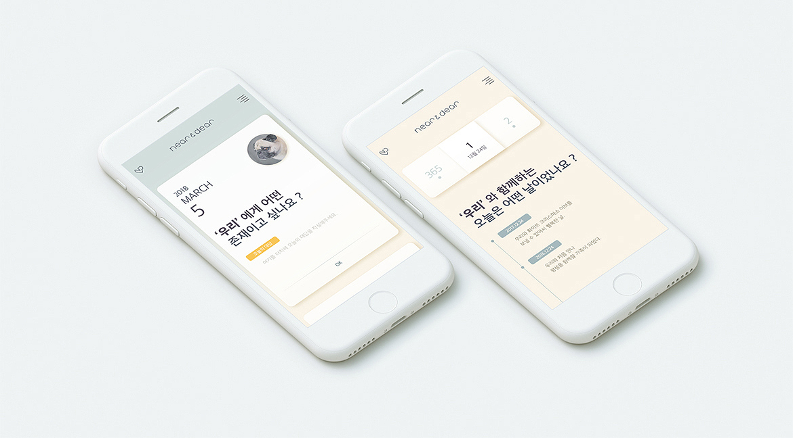
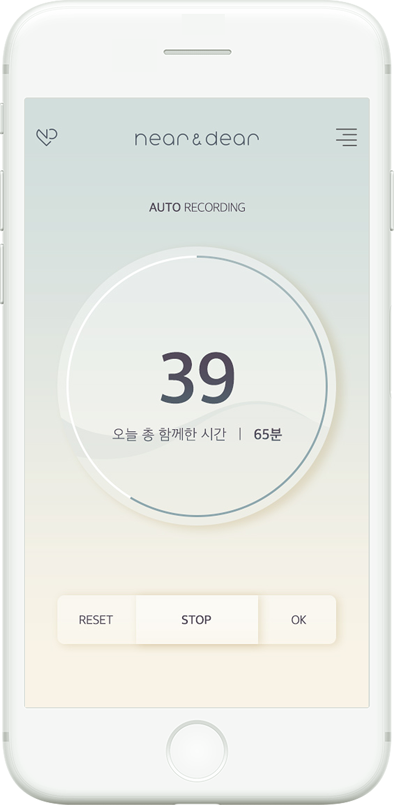
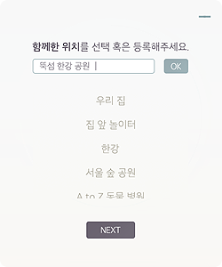
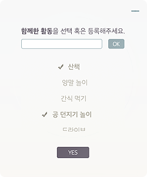
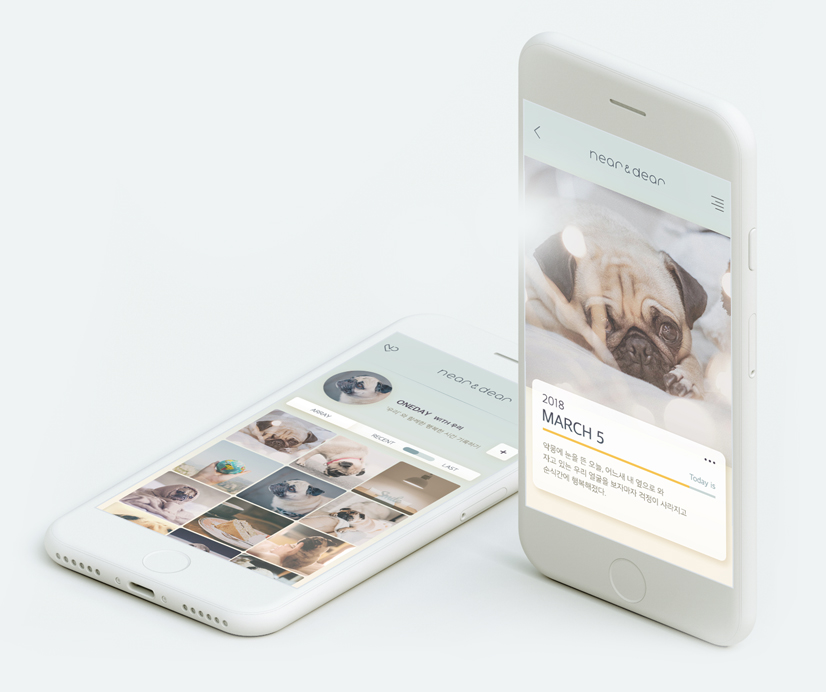
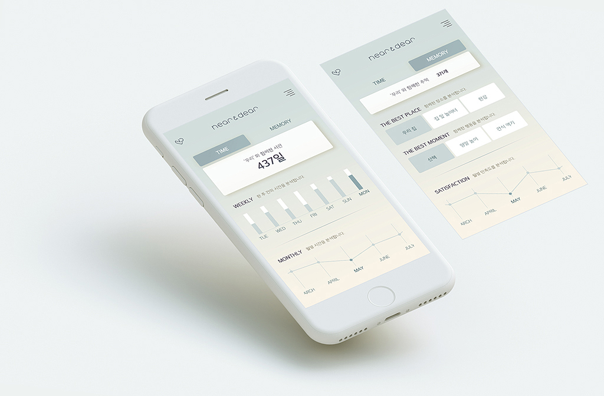
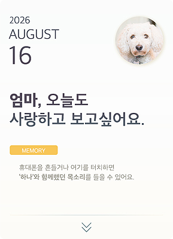
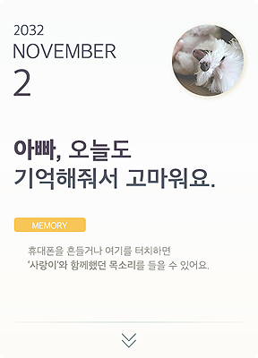
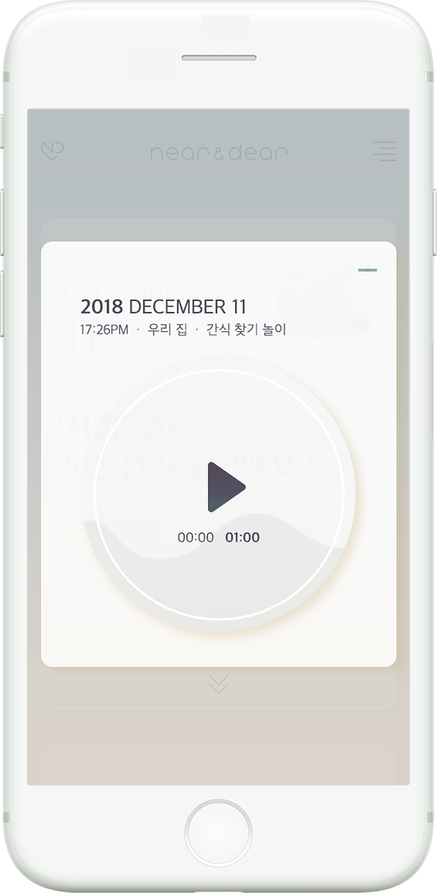

01
Q&ATIMELINE
매년 반복되는 365개의 질문 그리고 나의 대답
반려동물과의 시간에 대해 깊은 고민을 할 수 있는 질문을 제공해요. 매년 반복되는 365개의 질문과 함께 쌓여가는 나의 대답도 모아 볼 수 있어요.

- 
- 
02
TIMERVOICE RECORD
함께 보내는 시간 그리고 우리 목소리
반려동물과 함께하는 시간을 타이머로 측정해주세요.함께한 시간 및 활동과 장소, 랜덤 시간 동안 녹음 된우리 목소리도 함께 기록이 돼요.

03
ONEDAYALBUM
사진과 영상 그리고 오늘의 일기
사랑하는 반려동물과 함께한 모습 그리고 짧은 일기를오늘의 기분 혹은 만족도와 함께 기록할 수 있어요.

04
TOGETHERNEAR AND DEAR
니어앤디어에 기록된 시간과 추억 분석
니어앤디어에서 기록한 시간과 추억을 분석해 제공해요.요일 별·월 별 분석된 결과를 한 눈에 비교할 수 있어,보다 의미있는 시간을 보낼 수 있도록 도와줘요.
05
THE RAINBOWBRIDGE
반려동물과의 이별 후 추억 모드
추억 모드에서는 반려동물이 보내는 메세지와 함께 랜덤 날짜의 추억을 제공해요.반려동물과의 행복한 시간을 추억하는 것은 펫로스 증후군 완화에 도움을 줄 거예요.

- 
- 
